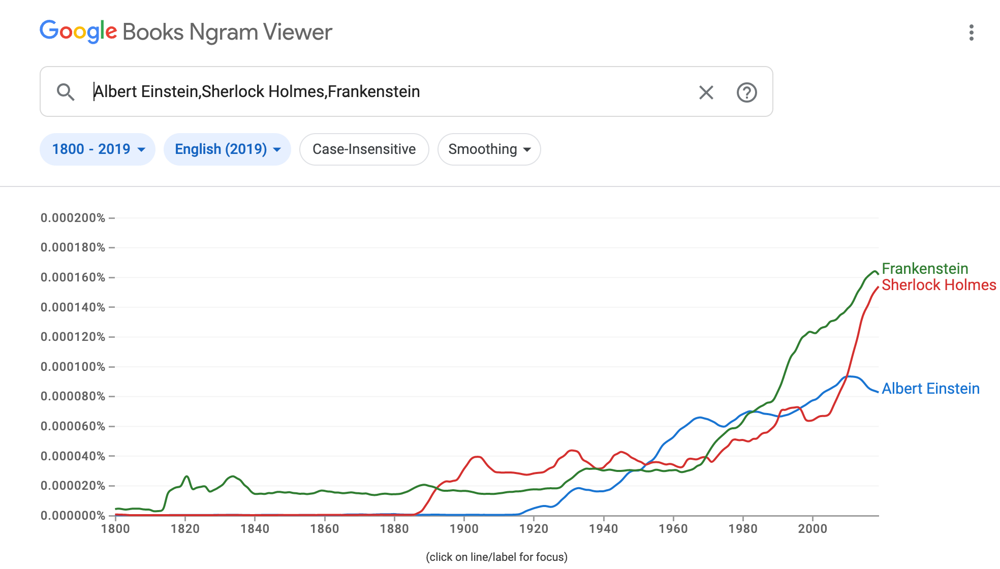

During my years working as a manager in retail during high school, I developed leadership and management skills that have been essential during my time in college. I hope to leverage these skills to build a meaningful project in my future computer science careers. My interests range from video game development to data science and I hope to learn more about web/app development and AI.
Projects

NGordnet (Ngram and WordNet)
Parses data from Google’s NGram dataset to allow users to see the
comparative usage of different words and their most used hyponyms throughout
history. Utilizes data structures such as Graphs, HashMaps, etc., as well as
pathfinding algorithms such as Dijkstra’s - Java
Build Your Own World
Software engineered randomly generated 2D world in Java's
Standard Draw, where user can explore world and interact with various features. Includes embedded minigames, mouse inputs, and allows username based save files - Java

Scheme Interpreter
An interpreter for scheme that tokenizes through inputs and uses tail recursion -Python
Ants vs SomeBees
Modified version of the popular phone and computer game Plants vs. Zombies. Developed using both functional and object-oriented programming - Python

Cats
Program the measured typing speed and implements auto correct - Python

2048
Built a fully functional replica of the phone and computer game 2048 - Java
Email: rachellowe@berkeley.edu
Linkedin: https://www.linkedin.com/in/rachel-lowe-7064b9214
{kind=link}
{kind=link}
{kind=link}